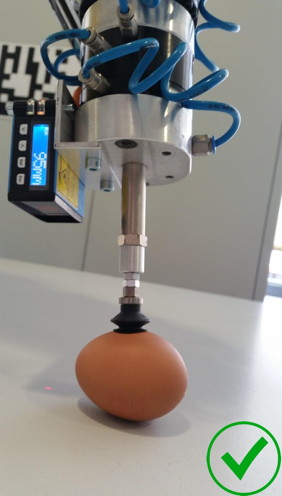
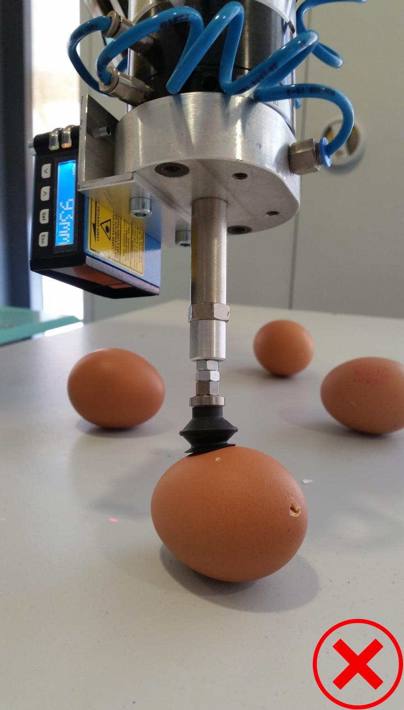

In order to evaluate and demonstrate the performance of the developed bin-picking process, several tests were taken and a demonstration was held to present the versatility of the system.
Small cylindrical pieces
The objects used in the first test were small cylindrical pieces, with a diameter of 37mm. By using these small objects, it is possible to check the precision and accuracy of the process. Some of the pieces were placed in the workspace table with a inclination to force the manipulator to position itself with different Euler angles.
In the 20 tested pieces 6 of them were not successfully grabbed, which represents a percentage of success of 70%. This low percentage is caused by several easily visible problems:
- Surface's Normal
- Centroid
- Laser Sensor Readings
One cause of error is in the determination of the surface’s normal, which sometimes is not properly computed. By positioning the end effector with the Euler angles computed with the wrong surface’s normal, the suction cup will not be parallel to the object’s surface, thus not allowing the object to be gripped, as in figure 1a.
Since the Kinect has a low precision, the centroid’s coordinates can vary up to 3mm from the correct centroid. In this specific test, this error was not one of the reasons for not catching those 6 pieces, however the piece in figure 1b was almost not grabbed because of this, which means that objects smaller than the ones used in this test could have failed more often because of this flaw.
The main cause of error in the picking of objects derives from the oscillation in the laser sensor readings. This, then, can cause two opposite situations, the tool tip could be too far from the object when grabbing it, as in figure 1c, but also too close, as in figure 1d. The piece in the last case was obviously grabbed but if it had been a more fragile object it could have broken it.
1a
 1b
1b
1c
1d
Ping Pong Balls
In the second test, the objects used were ping pong balls. With this test it is possible to demonstrate the versatility of this process by having the capability of grabbing objects with curved surfaces. The process held in the first test was replicated four times with the ping pong balls since there were only 5 balls to pick, thus having also a sampling of 20 objects for the experiment.
Coincidentally, in the second trial, 6 ping pong balls were also not grabbed. However, in this case, the main cause of error resulted from the incorrect determination of the surface’s normal. This is explained by the fact that normal vectors in curved surfaces vary along the object’s surface, unlike flat surfaces in which the normal vectors have all almost the same orientation. From the 6 pieces not grabbed, 3 of them occurred because of this specific issue, like the one in figure 2a . Nevertheless, in other times the surface’s normal was poorly determined but since the tool tip got close enough to the surface, the gripper was able to grab the object, as in the case presented in figure 2b. The other two issues observed in the first trial were, as expected, also reported in this second experiment. One object was not grabbed because of the incorrect determination of the object’s centroid, presented in figure 2c, and the other 2 were due to the incorrect measurement of the distance with the laser sensor, as in figure 2d.
2a
2b
2c
2d
In order to solve the errors in the laser sensor’s readings, firstly, the Arduino, the circuit and all the connections, used to receive and interpret the sensor’s output, were placed in a box, thus protecting all the connections.
Afterwards the laser sensor was re-calibrated with another process to ensure that the calibration curve, that links the sensor’s distance displayed in its monitor and the reading received by the Arduino, was as precise as possible. Since the laser sensor was now attached to the manipulator, contrarily to the first time calibrating, it was possible to use the robot’s accuracy to preform a better calibration. This time the calibration was held not only with the sensor’s distance displayed in its monitor but also with the exact position of the robot’s end effector. So, two linear regressions were then computed to evaluate the relation between both these informations with the readings received by the Arduino. Both curves are presented in the following figure. Through the Z coordinate of the robot’s end effector it is possible to ensure that the collected data is always equally spaced, thus obtaining a more precise slope for the calibration curve. Therefore, the equation that converts the reading to a distance was altered to include the scope of the linear regression that uses the end effector’s coordinates (blue curve in the figure) and the intercept of the curve that uses the distance displayed in the sensor’s monitor (red curve in the figure). Consequently the Arduino’s code was changed and uploaded.
Eggs
After the alteration in the laser sensor’s calibration curve a third test was conducted. In this third trial the objects used were eggs, thus demonstrating that this process is sufficiently precise to grab fragile objects without deforming or breaking them. The eggs used were previously emptied in order to prevent the egg’s content to enter the pipes with compressed air, used for the suction, in case of breaking. Consequently, by using empty eggs these will be even more fragile and harder to grab without breaking. In third trial the procedure used in the second trial was replicated since there were only 5 eggs as well.
Now, from the 20 eggs used in this test 18 were successfully grabbed, and figures 3a, 3b and 3c present some of those successes. From the two unsuccessfully grabbed eggs, one was due to the incorrect determination of the surface’s normal, presented in figure 3d, and the other was caused by something not yet witnessed in these trials. Since the eggs become lighter when emptied, at the moment the end effector moves closer to more distant objects, the suction cup, sometimes, can push those objects when approaching them. This will cause situations has the one visualized in figure 3e. To solve this problem the suction can be activated when the manipulator is approaching the object and not after.
3a
3b
3c
3d
3e
Variety of Distinctive Shaped Objects
The last and fourth test was performed now with a variety of distinctive shaped objects. In the last test cobbles, eggs, ping pong balls, duct tapes and small cylindrical objects were scattered in front of the manipulator, within the limits marked on the table. Those limits represent the intersection between the area observed by the Kinect and the space in which the robot can safely move. Once more, the process applied in the other tests was used, and the objects were picked from the largest object to the smallest, i.e., objects represented by point clouds with more points were the first to be picked.
Now, from the 20 eggs used in this test 18 were successfully grabbed, and figures 7.8a, 7.8b and 7.8c present some of those successes. From the two unsuccessfully grabbed eggs, one was due to the incorrect determination of the surface’s normal, presented in figure 7.8d, and the other was caused by something not yet witnessed in these trials. Since the eggs become lighter when emptied, at the moment the end effector moves closer to more distant objects, the suction cup, sometimes, can push those objects when approaching them. This will cause situations has the one visualized in figure 7.8e. To solve this problem the suction can be activated when the manipulator is approaching the object and not after.
2a
2b
2c
2d